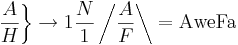

De: La Frikipedia, la enciclopedia extremadamente seria.
De: La Frikipedia, la enciclopedia extremadamente seria. De: La Frikipedia, la enciclopedia extremadamente seria.
| De la serie enfermedades y padecimientos: | |||
| Awesome Face | |||
| |||
| Nombre común | Gilipollez bestial. | ||
| Clase | Parida descomunal y matadora. | ||
| Afecta a | Hogos, boca y cerebro. | ||
| Número de enfermos | 98765. | ||
| Pruebas clínicas | No se necesitan, se ve a primera vista. | ||
| Extendida en | Toda la galaxia. | ||
| Diagnosis (síntomas) | El medico mira con gafas especiales al paciente. | ||
| Tratamiento | Regeneración Cerebral | ||
| Prognosis (expectativas) | Muerte Instantanea | ||
| ¿Contagiosa? | Sí si miras a la cara al afectado. | ||
| Dieta | Tang (a base de mierda con patatas). | ||
| Caso famoso | IP anónima ya que el/la muy gilipollas lo buscó en google y obtuvo 1.000 de ellas que le evaporaron el cerebro, aunque tenia poco porque lo buscó. | ||
Awesome Face o AweFa que significa (o mas bien, sus siglas se reparten asi):
Amigos o Weyes que tienen falictaritismo acromotiano
esta enfermedad(o estado)se esta dando a conocer en el mundo internetero desde hace 20 años, Antes que los dinosaurios pisaran tierra y se creara el mundial, se dice que la Awesome Face o como otros le dice: AweFa se creo en un acto de magia de David Copperfield, pero esto no es muy poco probable.
Esta enfermedad surge en el ratón, esta enfermedad se presento muy rara y los doctores no sabian que hacer ni que pensar, aunque el Doctor casas les suministraba un antidoto llamado: Anti-Awesomefaceismo, no fuincionaba ni en lo más minimo ya que era una enfermedad visual y se tenia que inciar un tratamiento en los brazos.
El falictaritismo acromotiano mejor conocido como AweFa(bueno no es conocido), puede darse en todas las edades, desde 1 dia hasta 100 años(los de 101 años la libran), pero los mas cumunes se dan en personas de 17-17.6 y el falictaritismo acromotiano es la no es causa de muerte, sino al contrario; te ayuda a vivir cada dia más y más.
¿Porqué el falictaritismo acromotiano?
El falictaritismo es una membrana corporal que habita en tus testiculos(seas hombre o mujer, no importa) esta membrana no es muy conocida(porqué realmente no existe) y se dio a conocer en 1783, en una revista especializada del norte de Reino Hundido de Gran Bretaña e Islandia del Norte, y esta información fue dada a conocer en la columna(de la revista y no de su cuerpo) por el doctor investigativo Billy puertas.
Esto es una enfermedad investigada tan profundamente en una fuente muy confialble(a veces) aunque en google muestra que el "Awesome Face" es una casualidad aunque algunos medicos de escuelas muy inportantes de gringolandia, muestra que esto es una enfermedad muy grave que se da en las personas de 1 a 120 años y tambien se da en los robots se dice que esto es una reaccion quimica casual, la cual causa un gas de "Hetanohixidronico cloridricohidrogenuro", que se resume a el griego: "estupidus" y en español: "Estupido", que este gas es el mismo que causa la Inombrableitis, aunque esto no es muy seguro y solo se especula.
Los síntomas aparecen desde que pones una cara si como le de arriba aunque tambien se nota por qué tu piel comienza a tomar un color amarilo, tus ojos se ponen grandes y brillantes. también hay varios grupos de AweFa que se muestran en grados.
Grado AFX: No es posible asignar un grado ya que los doctores tardan centenares de horas para traer café los estudios realizados a los pacientes = Grado intermedio(medio bien y medio mal)
Grado AF1/s: Poco contagiado = Grado bajo
Grado AF2+3-2=3: Contagiado con moderación(moderación en beber cerveza) = Grado Medio mini bajo
Grado AF3·2+2=5: Contagio nivel 5.7 = Grado alto
Grado 4#23º: Cabronamente contagiado = Grado super alto
Esta es la causa de la Awesome Face según Google:

El tratamiento para esta extraña enfermedad se compone de 3 partes: cirugía caral(osease de cara), terapia anti-Awesome Face y por ultimo pero no menos importante Googleterapia
La cirugía caral se compone por una cirugía de cara, para quitar todos los restos de este extraño mal y si tiene demasiado infectado se puede hace un transplante de brazo, aunque esto no tenga nada que ver, Funciona.
La terapia anti-Awesome Face se trata de dar toques electrocos directo en las areas de donde se le quito el falictaritismo acromotiano, tambien se compone de nadar con delfines pero eso solo se hace por diversión y para evitar que el/la paciente se suicide.
y por ultimo la Googleterapia que se compone de serios pantallazos azules de la muerte y de entrar al maligno google y hacer una busqueda normal y sin que aparezca nada sobre Awesome Face.
Claramente todo esto puede llegar(o no) a ser efectivo, en todos los pacientes se representa de una manera diferente y puede tener una respuesta inugualable, la respuesta puede ser:
Los AweFa tienen el sentido común(y corriente, aunque más corriente que común) de estar siempre pegados al Mésenller 29 horas al dia(aunque puede variar a 29 horas con 1 minuto), se les puede reconocer por:
Nick: =DDDDDDD!!!!!!!!!!!
Mensaje Rápido: =D!!!!!!!!!!!!!!!
Imagen:
aunque tambien se les reconoce por hablar y hablar a cada rato y tienden a poner 1.000.000(un millón ¬¬) de carita y/o emoticones en cada oración tambien por agredirte verbal, psicologica y mentalmente y despues de 1 minuto te piden disculpas hasta casi las lagrimas, hasta que le digas "Te perdono", entonces te pone más millones de emoticones.
Es caracterizado/a por tener muchos amigos que por lo general no conoce y nisiquiera le hacen caso y publica cosas como loco/a tambien se le conoce por hacerce "Fan" de infinidad de cosas por más estupidas que sean o lleguen a ser. Se puede reconocer por:
Publicaciones: =DDDDDD, quiero mucho a todos, en serio los quiero =DDDDDDDD
Imagen:

Notese que los ojos estan dilatados y no tiene mandibula.
¿Sientes que te duele la cabeza?
¿Tú cara se esta poniendo amarilla?
¿Tú novia te esta engañando?
Si respondiste SI a una de las preguntas anteriores puedes ser emo tener Awesome Faceismo, si quieres saber si lo tienes o no, hazte un chequeo rayo aquí, completamente GRATIS (Utiliza la F5 para cambiar).
| Normalito IP anónima, es buena noticia decirle que no tiene mucho, solo una infección leve que se quita con 20 dolorosas inyecciones. |
Autor(es):